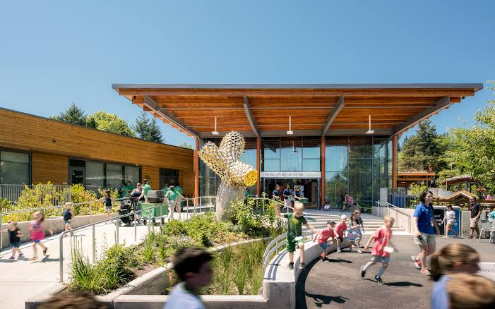

About the National Zoological Garden


The National Zoological Garden of South Africa, commonly known as Pretoria Zoo, is located in Pretoria. It was founded in 1899 and became the official National Zoological Garden in 1916.
The organisation is associated with the South African National Biodiversity Institute (SANBI) and focuses on biodiversity conservation, animal care, research, environmental education and visitor experiences.
Our Mission
To support biodiversity conservation through animal care, research, education and public awareness.
Our Vision
To contribute to the conservation of biodiversity while providing valuable educational and visitor experiences.
Our Target Audience
- Families
- School groups
- Tourists
- Students
- Researchers
- Conservation enthusiasts
- General visitors
Our Role in Conservation
The National Zoological Garden contributes to biodiversity conservation through animal care, research, education and public awareness.
Visitors can learn about wildlife and understand the importance of protecting animals and their natural environments.